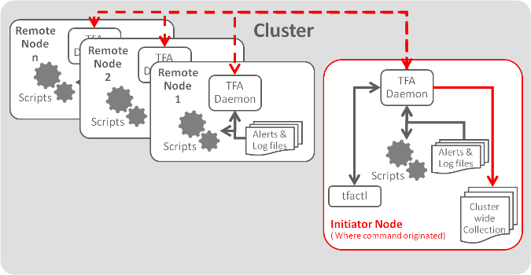

4.1.1 Oracle Trace File Analyzer Architecture
Oracle Trace File Analyzer and Oracle Trace File Analyzer Collector use a single daemon on the database server. If the database is clustered, then a daemon runs on each node of the cluster.
Figure 4-1 Oracle Trace File Analyzer Architecture
Description of "Figure 4-1 Oracle Trace File Analyzer Architecture"
Control Oracle Trace File Analyzer and Oracle Trace File Analyzer Collector through the command-line interface tfactl, which can either be used in single command fashion or as a command shell.
The tfactl command communicates with the local daemon, which then coordinates with all daemons in the cluster. Each daemon runs the necessary diagnostic scripts locally, collects, and then trims local logs.
All daemons coordinate to create the resulting cluster-wide collection on the node where the tfactl command was run. If the collection was initiated automatically, then the email notification contains the location of the cluster-wide collection.